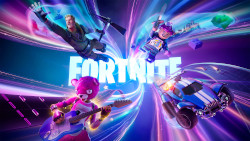

Jogos e suas caracteristicas
Fortnite
Sucesso!
Fortnite ganhou vários prêmios no The Game Awards, incluindo Melhor Multiplayer em 2018 e Melhor Jogo Contínuo em 2019.

Fortnite é um jogo de ação e sobrevivência desenvolvido pela Epic Games. Destaca-se pelo modo Battle Royale, onde até 100 jogadores competem para ser o último sobrevivente em um mapa que vai se reduzindo. Os jogadores podem construir estruturas defensivas usando recursos do ambiente. Além disso, o jogo oferece personalização de personagens, eventos constantes, suporte para crossplay e uma comunidade ativa. Sua combinação de jogabilidade rápida, elementos de construção e atualizações regulares contribuíram para sua imensa popularidade.
- Gênero
- É um jogo de ação e sobrevivência, com elementos de construção e tiroteio em terceira pessoa.
- Modos de jogo
- Battle Royale: O modo mais popular, onde até 100 jogadores competem para ser o último sobrevivente em um mapa que vai se reduzindo ao longo do tempo.
- Salve o Mundo: Um modo cooperativo PvE (jogador contra ambiente) onde os jogadores lutam contra hordas de inimigos controlados pelo computador, construindo fortalezas e buscando recursos para sobreviver.
- Construção
- Uma das características distintivas do Fortnite é a capacidade dos jogadores de coletar recursos do ambiente para construir estruturas defensivas, como paredes, rampas e torres, que podem ser usadas para se proteger dos inimigos ou para alcançar locais estratégicosu
Essas características combinadas ajudaram Fortnite a se tornar um dos jogos mais populares e culturalmente significativos da última década.
Call of Duty: Warzone
Premiações!
The Game Awards: "Warzone" foi indicado para Melhor Jogo Multiplayer em 2020.
Golden Joystick Awards: O jogo foi indicado para Melhor Jogo Multijogador em 2020.
Warzone" é um jogo eletrônico do gênero battle royale, desenvolvido pela Infinity Ward e Raven Software, e publicado pela Activision. Aqui estão algumas características principais do jogo:
- Battle Royale de larga escala
- Warzone" coloca até 150 jogadores em um único mapa enorme, onde competem para ser o último sobrevivente em uma partida intensa e dinâmica.
- Modo Plunder
- Além do modo tradicional de battle royale, "Warzone" apresenta um modo chamado Plunder, onde equipes competem para coletar a maior quantidade possível de dinheiro no mapa.
- Mapa massivo
- O mapa de "Warzone", chamado Verdansk, é vasto e diversificado, apresentando uma variedade de ambientes, desde áreas urbanas até áreas rurais e industriais.
- Jogabilidade tática
- Warzone" enfatiza a estratégia e o trabalho em equipe. Os jogadores podem escolher entre diferentes classes de personagens, armas e equipamentos, e coordenar táticas com seus companheiros de equipe.
Counter-Strike: Global Offensive
Competitivo!
Os prêmios em dinheiro oferecidos em torneios de CS:GO podem ser substanciais, especialmente em grandes eventos como os Majors, onde a premiação total pode chegar a milhões de dólares. A quantia recebida pela equipe vencedora pode variar, mas pode ser de centenas de milhares de dólares ou mais para os jogadores.
Counter-Strike" (CS) é uma franquia de jogos de tiro em primeira pessoa (FPS) que se originou como um mod do jogo "Half-Life" em 1999. Desde então, evoluiu para se tornar uma série de jogos altamente popular e influente. O jogo CS original foi desenvolvido pela Valve Corporation e desde então recebeu várias iterações e expansões. Abaixo está um resumo das características principais da série:
- Conceito de equipe
- CS é conhecido por sua jogabilidade baseada em equipes, onde os jogadores são divididos em dois times: Terroristas e Contra-Terroristas. Cada time tem objetivos específicos a cumprir em cada rodada, como plantar ou desarmar uma bomba, resgatar ou proteger reféns, ou eliminar a equipe adversária.
- Modos de jogo variados
- Além do modo principal, que é geralmente jogado em rodadas curtas e intensas, a série CS oferece outros modos de jogo, como Deathmatch, Capture the Flag e Zombie Mode, entre outros, que proporcionam experiências de jogo diferentes e diversificadas.
- Armas e equipamentos
- CS apresenta uma ampla variedade de armas, desde pistolas e rifles até metralhadoras e granadas. Gerenciar adequadamente o inventário de armas e equipamentos é essencial para o sucesso em cada partida.
Mapas icônicos: A série CS é conhecida por seus mapas bem projetados e equilibrados, cada um com suas próprias características e desafios únicos. Mapas como "Dust II", "Mirage" e "Inferno" são amplamente reconhecidos e populares entre os jogadores.